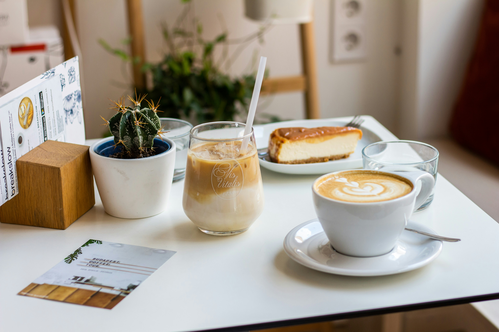

Um cardápio para cada momento
Nossos destaques, feitos com os melhores ingredientes da região.

Cafés Especiais
Do espresso intenso ao latte aveludado, grãos selecionados moídos na hora para você.

Doces da Casa
Bolos frescos, cheesecakes cremosos e tortas que abraçam a alma. Impossível resistir.

Salgados e Lanches
Tostas, pães de queijo da Canastra e outras delícias para acompanhar seu café.